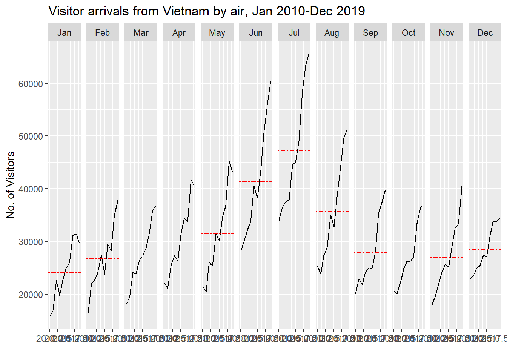
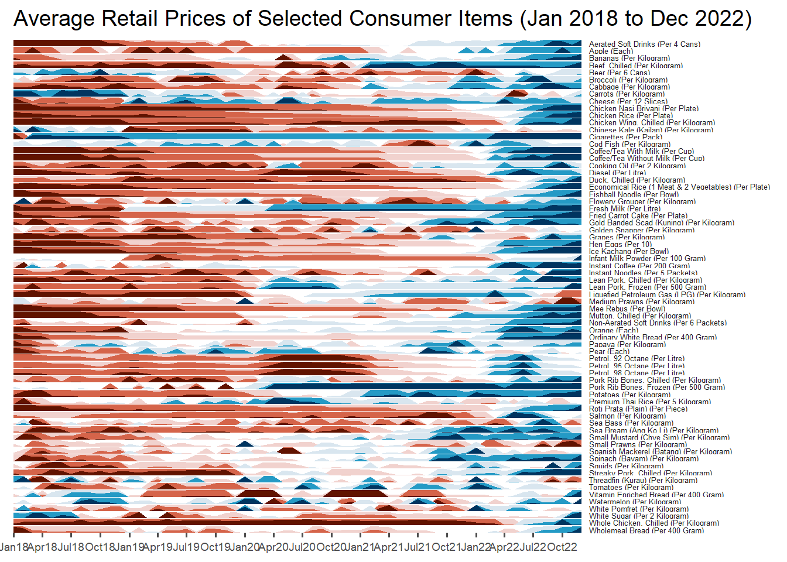

show the code
pacman::p_load(scales, viridis, lubridate, ggthemes, gridExtra, readxl, knitr, data.table, CGPfunctions, ggHoriPlot, tidyverse)The code chunk below uses p_load() of pacman package to check if packages are installed in the computer. If they are, then they will be launched into R. The R packages installed are: plotly and tidyverse
pacman::p_load(scales, viridis, lubridate, ggthemes, gridExtra, readxl, knitr, data.table, CGPfunctions, ggHoriPlot, tidyverse)For the purpose of this hands-on exercise, eventlog.csv file will be used. This data file consists of 199,999 rows of time-series cyber attack records by country.
attacks <- read_csv("data/eventlog.csv")For example,kable() can be used to review the structure of the imported data frame.
kable(head(attacks))| timestamp | source_country | tz |
|---|---|---|
| 2015-03-12 15:59:16 | CN | Asia/Shanghai |
| 2015-03-12 16:00:48 | FR | Europe/Paris |
| 2015-03-12 16:02:26 | CN | Asia/Shanghai |
| 2015-03-12 16:02:38 | US | America/Chicago |
| 2015-03-12 16:03:22 | CN | Asia/Shanghai |
| 2015-03-12 16:03:45 | CN | Asia/Shanghai |
There are three columns, namely timestamp, source_country and tz.
timestamp field stores date-time values in POSIXct format. source_country field stores the source of the attack. It is in ISO 3166-1 alpha-2 country code. tz field stores time zone of the source IP address.
Step 1: Deriving weekday and hour of day fields
Before we can plot the calender heatmap, two new fields namely wkday and hour need to be derived. In this step, we will write a function to perform the task.
make_hr_wkday <- function(ts, sc, tz) {
real_times <- ymd_hms(ts,
tz = tz[1],
quiet = TRUE)
dt <- data.table(source_country = sc,
wkday = weekdays(real_times),
hour = hour(real_times))
return(dt)
}ymd_hms() and hour() are from lubridate package, and weekdays() is a base R function.
Step 2: Deriving the attacks tibble data frame
wkday_levels <- c('Saturday', 'Friday',
'Thursday', 'Wednesday',
'Tuesday', 'Monday',
'Sunday')
attacks <- attacks %>%
group_by(tz) %>%
do(make_hr_wkday(.$timestamp,
.$source_country,
.$tz)) %>%
ungroup() %>%
mutate(wkday = factor(
wkday, levels = wkday_levels),
hour = factor(
hour, levels = 0:23))Beside extracting the necessary data into attacks data frame, mutate() of dplyr package is used to convert wkday and hour fields into factor so they’ll be ordered when plotting
Table below shows the tidy tibble table after processing.
kable(head(attacks))| tz | source_country | wkday | hour |
|---|---|---|---|
| Africa/Cairo | BG | Saturday | 20 |
| Africa/Cairo | TW | Sunday | 6 |
| Africa/Cairo | TW | Sunday | 8 |
| Africa/Cairo | CN | Sunday | 11 |
| Africa/Cairo | US | Sunday | 15 |
| Africa/Cairo | CA | Monday | 11 |
grouped <- attacks %>%
count(wkday, hour) %>%
ungroup() %>%
na.omit()
ggplot(grouped,
aes(hour,
wkday,
fill = n)) +
geom_tile(color = "white",
size = 0.1) +
theme_tufte(base_family = "Helvetica") +
coord_equal() +
scale_fill_gradient(name = "# of attacks",
low = "sky blue",
high = "dark blue") +
labs(x = NULL,
y = NULL,
title = "Attacks by weekday and time of day") +
theme(axis.ticks = element_blank(),
plot.title = element_text(hjust = 0.5),
legend.title = element_text(size = 8),
legend.text = element_text(size = 6) )
a tibble data table called grouped is derived by aggregating the attack by wkday and hour fields.
a new field called n is derived by using group_by() and count() functions.
na.omit() is used to exclude missing value.
geom_tile() is used to plot tiles (grids) at each x and y position. color and size arguments are used to specify the border color and line size of the tiles.
theme_tufte() of ggthemes package is used to remove unnecessary chart junk. To learn which visual components of default ggplot2 have been excluded, you are encouraged to comment out this line to examine the default plot.
coord_equal() is used to ensure the plot will have an aspect ratio of 1:1.
scale_fill_gradient() function is used to creates a two colour gradient (low-high).
Then we can simply group the count by hour and wkday and plot it, since we know that we have values for every combination there’s no need to further preprocess the data.
cStep 1: Deriving attack by country object
In order to identify the top 4 countries with the highest number of attacks, you are required to do the followings:
count the number of attacks by country, calculate the percent of attackes by country, and save the results in a tibble data frame.
attacks_by_country <- count(
attacks, source_country) %>%
mutate(percent = percent(n/sum(n))) %>%
arrange(desc(n))In this step, you are required to extract the attack records of the top 4 countries from attacks data frame and save the data in a new tibble data frame (i.e. top4_attacks).
top4 <- attacks_by_country$source_country[1:4]
top4_attacks <- attacks %>%
filter(source_country %in% top4) %>%
count(source_country, wkday, hour) %>%
ungroup() %>%
mutate(source_country = factor(
source_country, levels = top4)) %>%
na.omit()ggplot(top4_attacks,
aes(hour,
wkday,
fill = n)) +
geom_tile(color = "white",
size = 0.1) +
theme_tufte(base_family = "Helvetica") +
coord_equal() +
scale_fill_gradient(name = "# of attacks",
low = "sky blue",
high = "dark blue") +
facet_wrap(~source_country, ncol = 2) +
labs(x = NULL, y = NULL,
title = "Attacks on top 4 countries by weekday and time of day") +
theme(axis.ticks = element_blank(),
axis.text.x = element_text(size = 7),
plot.title = element_text(hjust = 0.5),
legend.title = element_text(size = 8),
legend.text = element_text(size = 6) )
In this section, you will learn how to plot a cycle plot showing the time-series patterns and trend of visitor arrivals from Vietnam programmatically by using ggplot2 functions.
For the purpose of this hands-on exercise, arrivals_by_air.xlsx will be used.
The code chunk below imports arrivals_by_air.xlsx by using read_excel() of readxl package and save it as a tibble data frame called air.
air <- read_excel("data/arrivals_by_air.xlsx")Next, two new fields called month and year are derived from Month-Year field.
air$month <- factor(month(air$`Month-Year`),
levels=1:12,
labels=month.abb,
ordered=TRUE)
air$year <- year(ymd(air$`Month-Year`))Next, the code chunk below is use to extract data for the target country (i.e. Vietnam)
Vietnam <- air %>%
select(`Vietnam`,
month,
year) %>%
filter(year >= 2010)The code chunk below uses group_by() and summarise() of dplyr to compute year average arrivals by month.
hline.data <- Vietnam %>%
group_by(month) %>%
summarise(avgvalue = mean(`Vietnam`))ggplot() +
geom_line(data=Vietnam,
aes(x=year,
y=`Vietnam`,
group=month),
colour="black") +
geom_hline(aes(yintercept=avgvalue),
data=hline.data,
linetype=6,
colour="red",
size=0.5) +
facet_grid(~month) +
labs(axis.text.x = element_blank(),
title = "Visitor arrivals from Vietnam by air, Jan 2010-Dec 2019") +
xlab("") +
ylab("No. of Visitors")
In this section you will learn how to plot a slopegraph by using R.
Before getting start, make sure that CGPfunctions has been installed and loaded onto R environment. Then, refer to Using newggslopegraph to learn more about the function. Lastly, read more about newggslopegraph() and its arguments by referring to this link.
Import the rice data set into R environment by using the code chunk below.
rice <- read_csv("data/rice.csv")Next, code chunk below will be used to plot a basic slopegraph as shown below.
rice %>%
mutate(Year = factor(Year)) %>%
filter(Year %in% c(1961, 1980)) %>%
newggslopegraph(Year, Yield, Country,
Title = "Rice Yield of Top 11 Asian Counties",
SubTitle = "1961-1980",
Caption = "Prepared by: Dr. Kam Tin Seong")
For effective data visualisation design, factor() is used convert the value type of Year field from numeric to factor.
Before getting start, make sure that ggHoriPlot has been included in the pacman::p_load(…) statement above.
pacman::p_load(ggHoriPlot, ggthemes, tidyverse)For the purpose of this hands-on exercise, Average Retail Prices Of Selected Consumer Items will be used.
Use the code chunk below to import the AVERP.csv file into R environment.
averp <- read_csv("data/AVERP.csv") %>%
mutate(`Date` = dmy(`Date`))Next, the code chunk below will be used to plot the horizon graph.
averp %>%
filter(Date >= "2018-01-01") %>%
ggplot() +
geom_horizon(aes(x = Date, y=Values),
origin = "midpoint",
horizonscale = 6)+
facet_grid(`Consumer Items`~.) +
theme_few() +
scale_fill_hcl(palette = 'RdBu') +
theme(panel.spacing.y=unit(0, "lines"), strip.text.y = element_text(
size = 5, angle = 0, hjust = 0),
legend.position = 'none',
axis.text.y = element_blank(),
axis.text.x = element_text(size=7),
axis.title.y = element_blank(),
axis.title.x = element_blank(),
axis.ticks.y = element_blank(),
panel.border = element_blank()
) +
scale_x_date(expand=c(0,0), date_breaks = "3 month", date_labels = "%b%y") +
ggtitle('Average Retail Prices of Selected Consumer Items (Jan 2018 to Dec 2022)')